今天来看一篇钢琴琴谱翻译的文章，出自ByteDance字节跳动，Giant-Piano（GiantMIDI-Piano：字节跳动发布的大型古典钢琴乐MIDI数据集）采用的转谱模型就是这个：
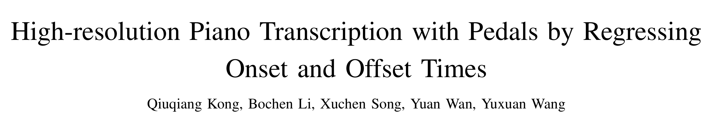
两个相关的源代码地址：
琴转谱：
https://github.com/bytedance/piano_transcription
数据集相关：
https://github.com/bytedance/GiantMIDI-Piano
曲转谱（Automatic Music Transcription（AMT））就是把钢琴曲（音频）转换成电子乐谱（Musical Instrument Digital Interface（MIDI））。这个课题的相关工作是比较少的，毕竟乍一看乍一想没啥商业价值。咱读这篇，就当好玩吧，毕竟，谁不热爱音乐呢？这次除了会解读论文，还会解析代码。
AMT是音乐信息提取（Music Information Retrieval（MIR））中关联基于音频的音乐理解和基于符号的音乐理解的桥梁。AMT有几个关键的应用，包括乐谱跟踪（Score Following），音频与乐谱对位（audio to score alignment），以及根据曲谱分离出曲子（score-informed source separation ）。而工业界，AMT可以用来做音乐类的教育软件，可以为创作者将弹的曲子翻译成谱子，可以将音频信息转换成符号信息等等。
这篇只做钢琴曲的转谱。包括识别音调（pitch），按下琴键（onset），松开琴键（offset），速度（velocity）等信息。钢琴曲转谱并不简单，之前也有各种各样的尝试，这里就不仔细展开说了，感兴趣的看论文原文。我们直接说一说之前的工作都有哪些不足（以前的工作的不足，就是这个工作的动机）：
- 之前的曲转谱呢，是把曲子切割成一个一个小段（frames），然后再来标记每个frame的特征，比如是onset还是offset。这样的话翻译的精度就被frame的长度限制住了。
- 之前的工作多用一个frame来标记onset或者offset，但是其实类似onset的行为造成的影响，可能会持续不止一个frames，另外如果只用一个frame来标记onset或者offset，模型训练会对曲谱错位非常敏感。
接下来就是看针对这两个不足，新方法都做了哪些改进。
先简略介绍些概念：
1. 梅尔频谱（以下内容来自参考[1]）
音频信号是时域信号。人对声音的分辨力根据频率的不同而不同，较容易分辨低频信号，比如人很容易可以分辨500Hz和1000Hz的信号，但是却不那么容易分辨10000Hz和10500Hz，尽管两组信号的频域距离是一样的。梅尔频谱是说对频率做一个映射，相对拉大低频信号的距离，缩小高频信号的距离，使得人对他们的分辨能力和他们的距离能匹配上。
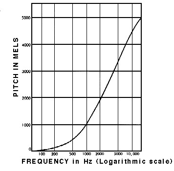
具体公式和具体工程实现请参考[2]：
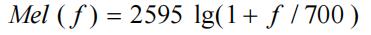
2. Frame-wise 翻译系统
在进行曲转谱的最开始，会把曲子先切割成frames，然后再将每个frame转成频域信号，再转换成梅尔频谱，因此最后输入是：
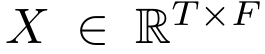
T是frames的数量，F是梅尔频带的数量。通常来说，这个任务的label，target是下面这样的：

T依然还是frames的数量，而K则是琴键的数量，比如88。而网络的输出可以表示为：
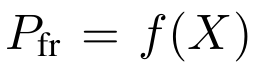
那么损失函数则可以用如下方式计算：
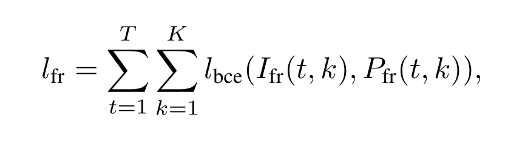
其中：
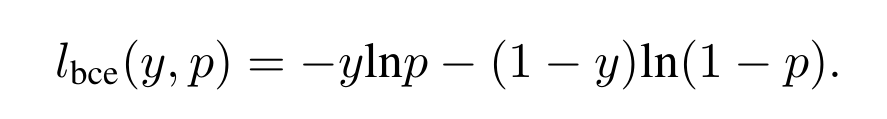
在frame-wise翻译系统里，要判断的是每一帧里，每个琴键的状态，是有发声还是没有发声。然后说一说这种方法的缺点：
- 这种翻译方式，如果要转成普通琴谱的样子还需要有精确的后期工作
- 另外这种方式不能准确的预测onsets，而onsets又恰恰包含了大量信息
3. Onsets and Frames 翻译系统
为了解决上面的问题，那么自然就提出了预测onsets和offsets的双目标系统。也有人onsets和frames双目标系统，也就是说既输出onsets也输出上面frame-wise输出的结果。所以损失函数是：
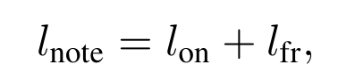
其中：
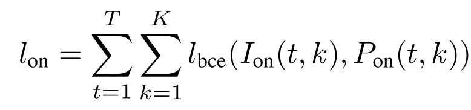
这个方法也依然又缺陷：
- 精度受frame长短限制
- 而onsets和frames仅用二进制0，1来表达状态，其实也不够精确
方法
这篇文章的方法自然要解决之前方法的缺陷，首先看下面这张图：
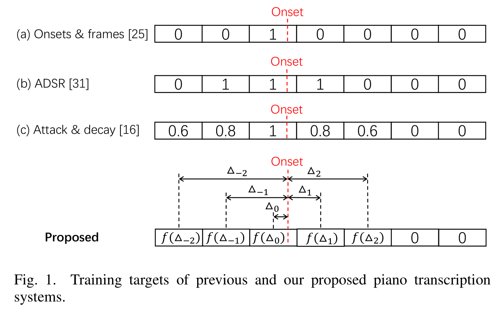
红线表示真正onset的时间，我们上节提到的onsets & frames方法仅仅标记了onset发生的那个frame。但这样是不准确的，因为这样无法表达一次onset的行为会对每个frame造成什么样的影响。ADSR则会识别onsets和offsets，onset造成影响的frames都会被标注成1。但ADSR这种方法会使音频波形变得模糊，会使offset的识别变得相对困难，而第一种方法会对onset和offset没有严格对其这种错误非常敏感。而为了解决上面两个问题，Attack&decay则用连续值来标记onset。那最后一个缺点就是，以上方法都没有标记onset的具体时间。用以上的方法，onset可以是一个frame种的任何时间，而如果onset如果恰好在两个frame的边界线上，那么target怎么标记都好像不太对，而如果为了解决这个问题去缩小frame的尺寸，一方面会增加计算量，另外一个方面是之前的问题依然存在。接下来就讲这篇文章提出的方法：
Regress Onset and Offset Times
这篇文章的译谱方法会输出具体的onset和offset的时间，这个想法受YOLO（You Only Look Once）启发，在YOLO里，图片会被切割为很多个grids，需要预测grid和object的距离。而这个任务的目标则是输出每个frame离自己最近的onset和offset的距离，如上图种最后一行所示。这边会对目标做一个变换：
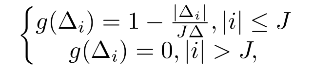
i是一个相对位置，J是控制锋度的变量，变换后，target大概长下面这样：
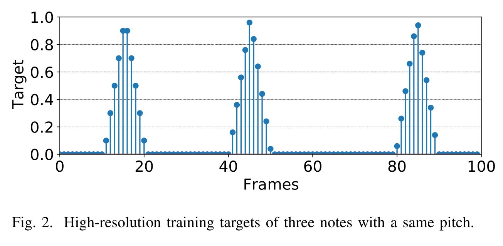
regression的意思也就在这里了。损失函数：
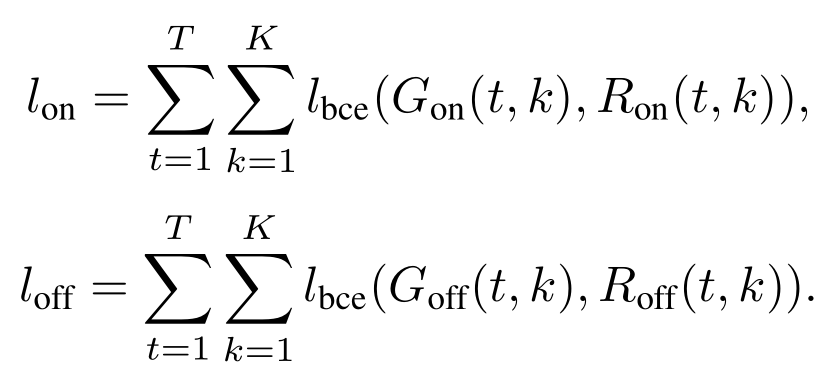
G是targets，R是预测结果。
Velocity Estimation
声音的三个属性指音量，音调和音色，音色不用判断，因为这个任务专识别钢琴，音调不同notes音调不同，所以还剩下音量，但是velocity这个单词我反复查看都是速度的意思，而文章的意思又明显指音量，即声音的大小。所以我猜可能是作者用错了词？或者这里面有我什么没看懂的关窍。总之先按音量来理解：
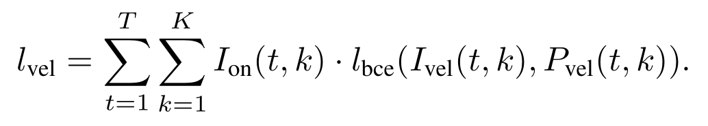
vel下标指的是velocity，on下标指的是onset，I指targets，P指ground truth。因为onsets的过程包含了更多关于音量的信息，因此音量的判断只用onsets的部分来判断，就不用offsets的部分来判断了。
Entire System
整个系统的网络框架如下图所示：
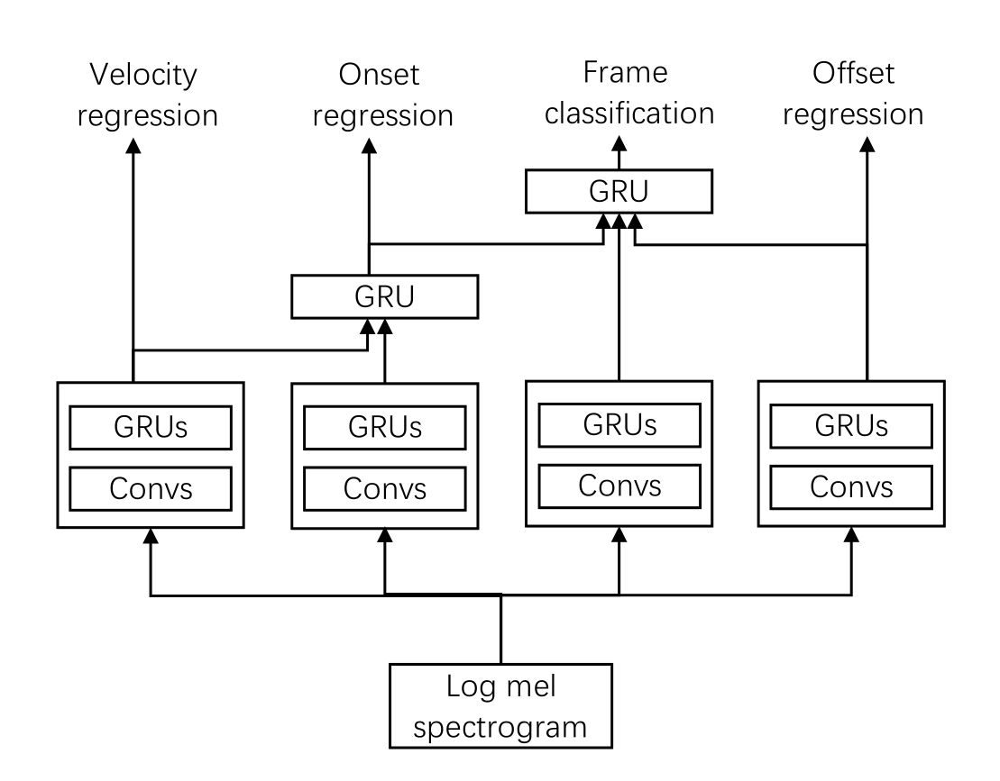
首先音频信号会切割成frames，每个frame再分别做梅尔频谱变化，输入则是做过频谱变换的数据，模型分四个部分，最左边做velocity regression，结果会接着用来加入做onset regression，原因是声音的高低有助于onset的判断，如果声音低，那么系统会消耗更多的注意力去侦测onset，这和人会耗费更多注意力在音量低的部分是一样的（这里就有点不懂这个逻辑了，比如怎么就能提高对系统对音量低的部分的注意力呢？），另外加入做onset regression的还有一个frequency dimension。onset regression和offset regression的结果会加入做frame-wise classification。更细节的模型框架见下图：
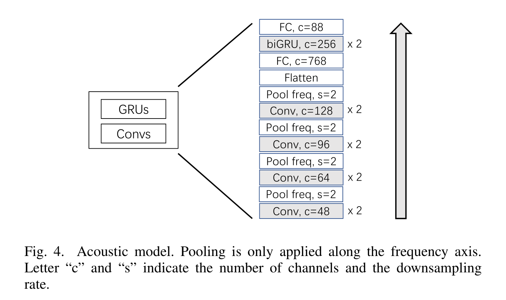
总的损失函数：
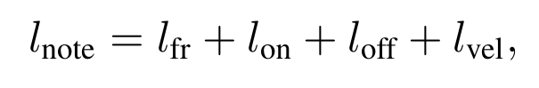
推理
推理的时候首先把曲子切割成frames，转换成梅尔频谱，再输入模型，得到velocity，onset，offset，frame-wised的结果，再转换成正规的曲谱。
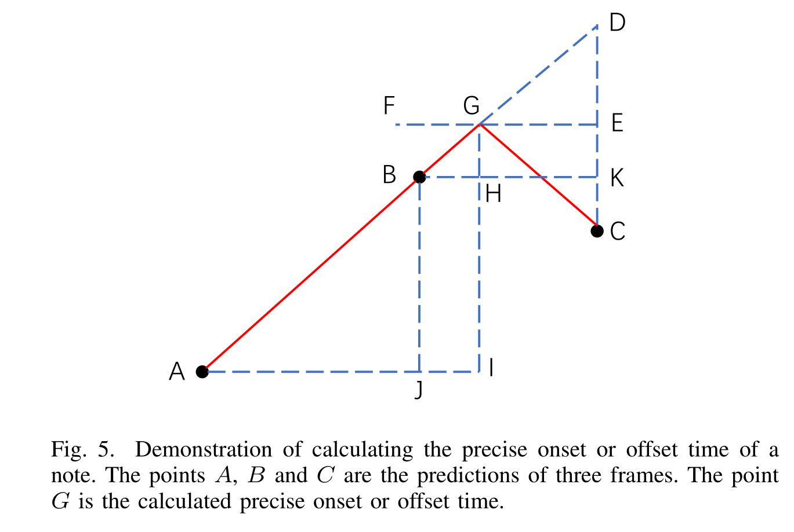
上图展示了如果计算精确的onset和offset时间的算法，A，B，C是三个相邻的frames的中心时间，B是那个被预测最有可能是onset所在的frame的中心时间。首先对所有frame单个分析，如果一个frame它的预测为onset的值超过了一定数，则去判断周边的两个都比他低，如果是的，那么则去找一个G点，使得AG与CG是以GI为轴对称的。那么上图中BH就是要求的答案，如果A所在的frame是onset的概率小于C所在的frame，则：
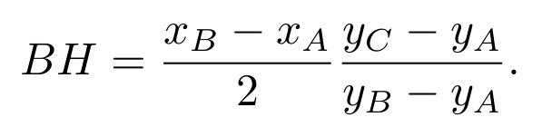
否则：
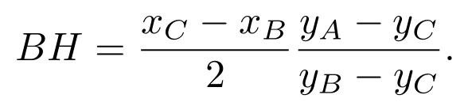
文中给了推导过程，这里就不细说了，感兴趣的可以验证一下。推理过程的算法如下：
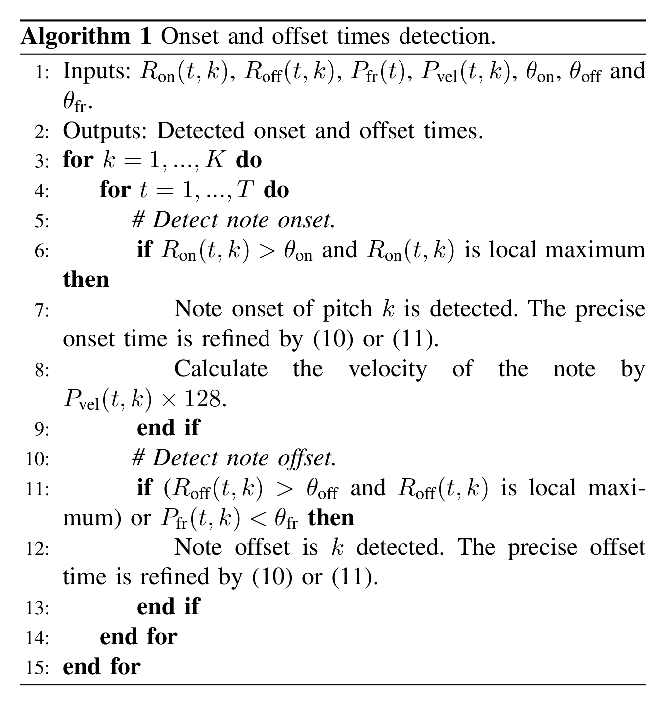
首先，onset和offset是成对出现的，算法中的10和11即计算BH的两个公式，P是frame-wise的输出。这个方法无法识别长度小于4个frames的onsets，但现实中这种情况也几乎不会发生。此外音量的值由[0,1]区间转至[0,128]区间。
Sustain Pedal Transcription
踏板对演奏的影响是很大的，按下时，延音踏板通过将所有制音器从琴弦上移开来维持钢琴上的所有阻尼琴弦，并允许琴弦自由振动。 正在播放的所有音符将继续发声，直到松开踏板。之前的钢琴译谱系统，有些没有做踏板状态的识别，有些做了呢，又没做曲调的识别。因此这篇文章还做了延音踏板译谱的工作，这个和曲调的模型是分开的，分开可以获得更好的效果，最后踏板的值在[0,128]之间。如果小于64，那么表示踏板没有开启，如果大于64，则表示踏板开启了。这样做其实是粗糙的，因为踏板中还有一些特殊技术，比如half pedals，这里是不识别的。踏板可以被当作一个琴键，损失函数和之前的其他琴键是一样的，也一样会有onset，offset和frame-wise结果：
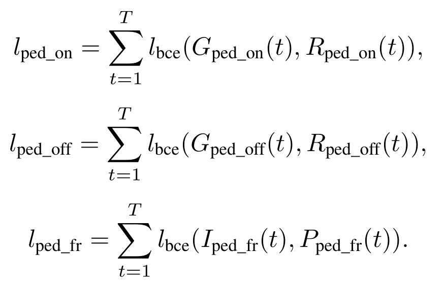
总的损失函数：
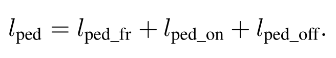
精确时间的计算算法如下：
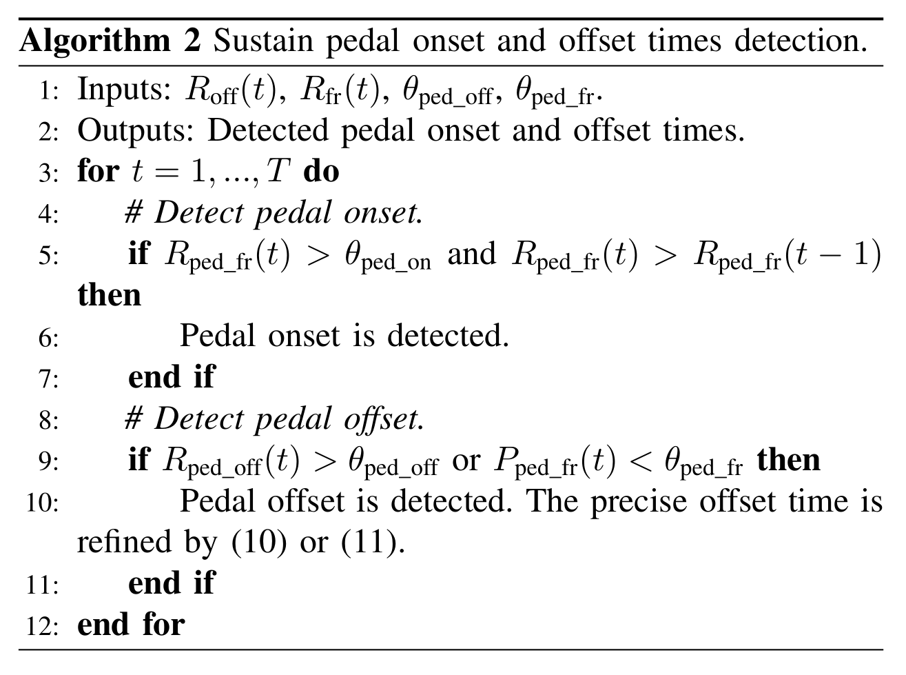
和琴键的onset，offset判断模式是不一样的，如果pedal onset的概率大于一定值，且比上一帧的概率大，那么就会被判断成是进行了onset。offset则是如果offset的概率大于一定值，或者frame-wise的值小于一定值，则判断为offset的帧，offset和onset是成对的。精确的时间的计算方法和琴键的onset，offset的计算方法是一样的（这里感觉琴键和pedal的具体时间的算法的写法有点问题，没有体现onset和offset的成对属性）。
实验
数据
数据集用的是MAESTRO dataset V2.0.0，包含200h钢琴独奏录音和对应的MIDI琴谱，时间精度约3ms。
预处理
所有音乐转为单声道，并将采样频率同步成16kHz，然后将其切割成10s的片段。然后将每个片段通过短时傅里叶变换（Hann窗口大小是2048）转成频谱。
参考：
[1]. Leland Roberts, Understanding the Mel Spectrogram, medium, 2020
[2]. BeichenLiu.Polaris，语音特征提取: 看懂梅尔语谱图(Mel-spectrogram)、梅尔倒频系数(MFCCs)的原理，2021
 解析/2.png)
的训练经验(Moco v3) -- Moco中的ViT/1.png)
原理及代码解析/1.png)
Comments